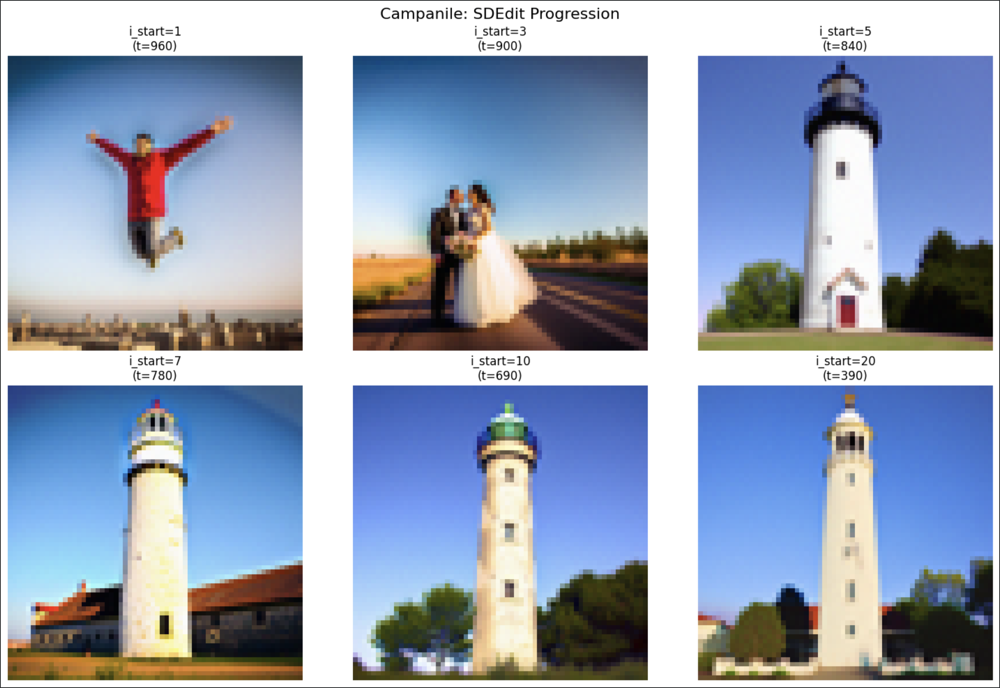
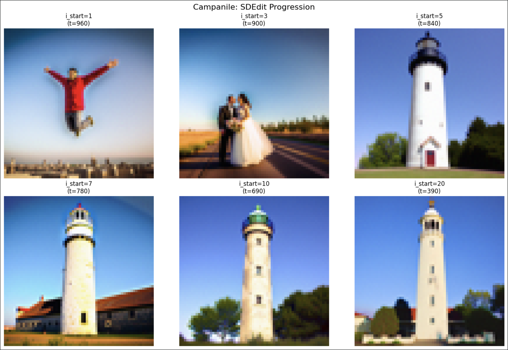
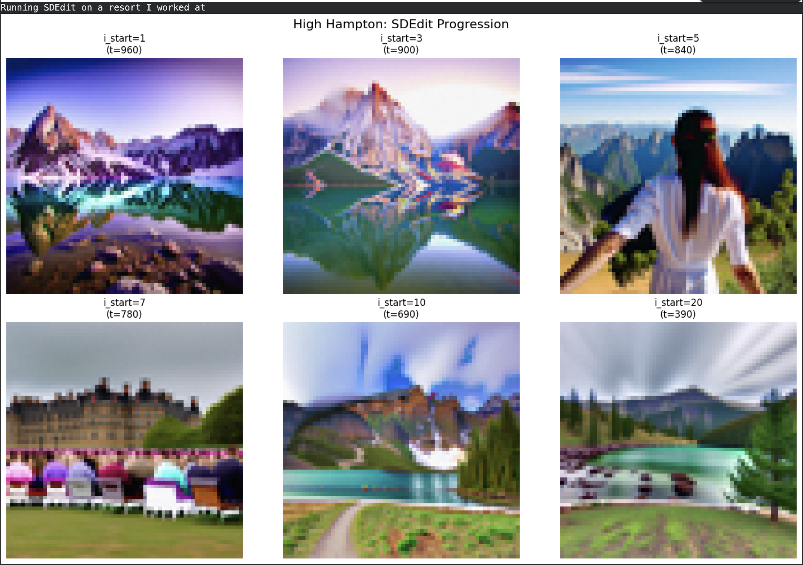
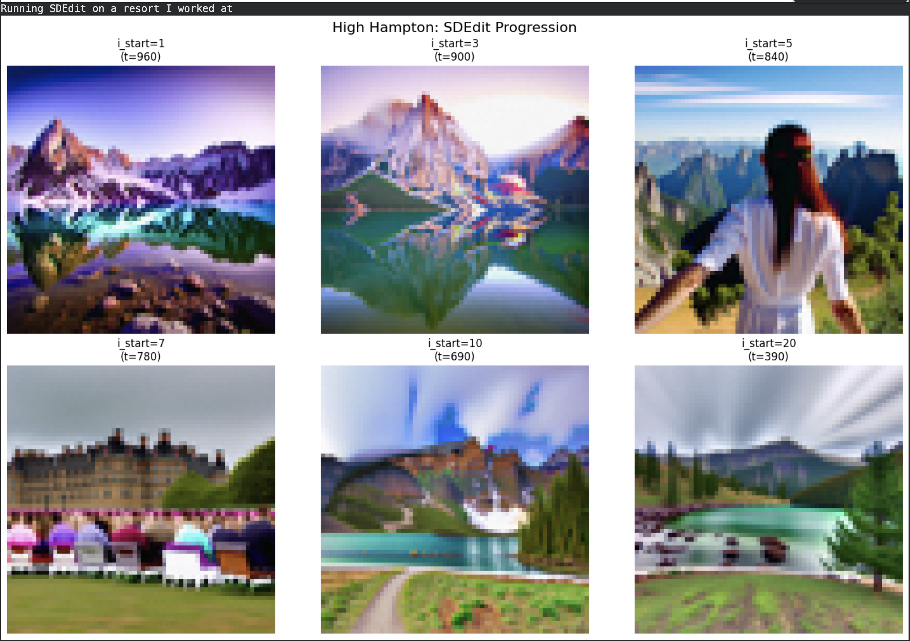

For all the generated images I used 150 as the random seed. The image above was generated using the first stage of the model with a number of inference steps of 20. Due to the size of the images, it is hard to see some of the detail, but you can see the images match the prompts. The snowy mountain image has one orange point on the mountain that stands out as being off but could possibly be sunlight. The man wearing a hat image looks really good without noticeable mistakes. The rocket ship has a tail behind the flames and the left wing looks solid red where the right is white with a red outline. The 3 following images are the same as above only separated to show more detail.

The images below were generated using the second stage of the model with a number of inference steps of 20.

With the larger size of the images, it is easier to see the details and you can clearly see the images match the prompts. The snowy mountain image has more orange on the mountains as sunlight reflection. The man wearing a hat image is by far the best in my opinion. The rocket ship has the same issues as the first stage image did.
The images below were also generated using the second stage of the model but with a number of inference steps of 100.
I was surprised to see the images changed with a higher number of inference steps. I thought it would simply cause the image to be refined more, but I didn't realize they would change completely. The snowy mountain image feels off with the layer look on the side of the mountain and what looks like the side of a building on the lower left but is a hill behind. The man wearing a hat image again looks the best of the three to me. The rocket ship has two lines pointing up from the wings making the image seem as if the ship is landing like space-X ships rather than taking off, but the prompt doesn't say any action only a rocket ship. Both the first and second stages have the ship flying within one would assume earth's atmosphere instead of outer space.
The images below were again generated using the second stage of the model with a number of inference steps of 500.

To me, I find the last three at inference steps of 500 to the worst. The snowy mountain image seems more cartoonish to me. The man wearing a hat image again has great details around the eyes, but the teeth area is off making it look like he is wearing a mouthpiece/guard. The rocket ship looks very bad to me. It is very cartoonish with multiple issues with the wings, fuselage, and exhaust.


 



 
